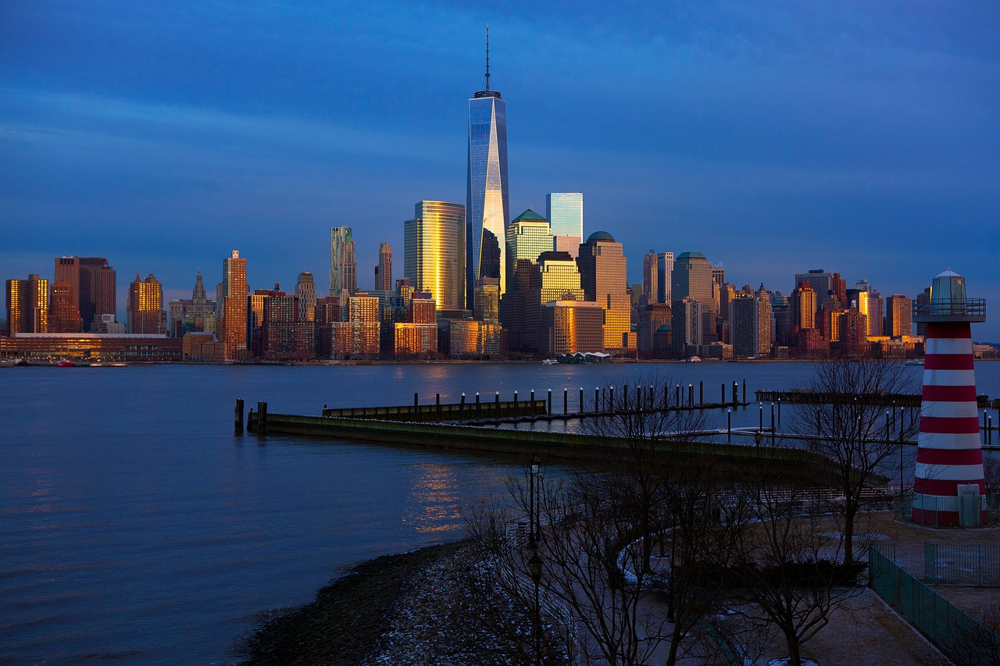

New york
New York City's history is a tale of transformation. Originally inhabited by the Lenape people, it became a Dutch settlement called New Amsterdam in 1624. The British seized it in 1664, renaming it New York. By the 18th century, it was a hub for trade and politics, playing a key role in the American Revolution. The 19th century brought waves of immigrants, industrial growth, and the consolidation of the five boroughs in 1898. Today, it's a global cultural and economic powerhouse.
Berlin
Berlin's history is a fascinating tale of transformation and resilience. It began as two small settlements, Berlin and Kölln, in the 13th century. Over time, they merged and became the capital of the Margraviate of Brandenburg. By the 18th century, Berlin was the heart of the Kingdom of Prussia, and later, the German Empire in 1871. The city faced immense challenges during World War II, including heavy bombing and street-by-street fighting. After the war, Berlin was divided into East and West, symbolizing the Cold War divide. The Berlin Wall, built in 1961, became a stark representation of this division until its fall in 1989.
Following Germany's reunification in 1990, Berlin was restored as the nation's capital and has since flourished as a global hub for culture, politics, and innovation.
Kyiv
Kyiv, the capital of Ukraine, has a rich and ancient history. It is believed to have been founded in the 5th or 6th century and is named after Kyi, one of the legendary founders. By the 9th century, Kyiv became the center of Kievan Rus, the first significant East Slavic state, earning it the title "Mother of Rus Cities." The city faced numerous invasions, including the Mongol invasion in 1240, which devastated it. Over the centuries, Kyiv was under the control of various powers, including the Grand Duchy of Lithuania, the Polish-Lithuanian Commonwealth, and the Russian Empire.
In the 20th century, Kyiv endured significant hardships during World War II and later became a major city in the Soviet Union. Following Ukraine's independence in 1991, Kyiv emerged as a vibrant European capital, symbolizing the nation's cultural and political identity.